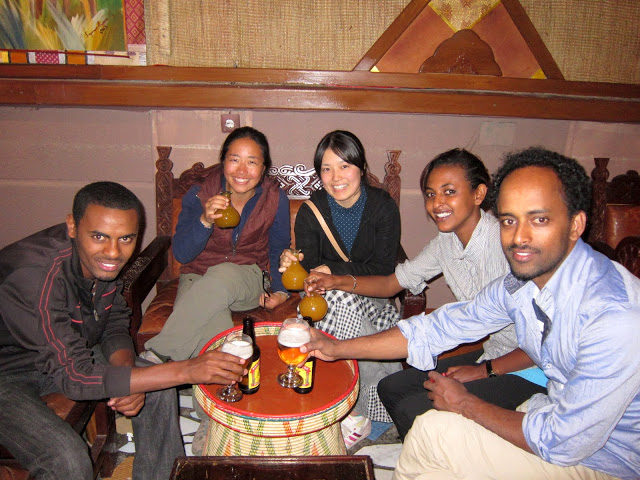
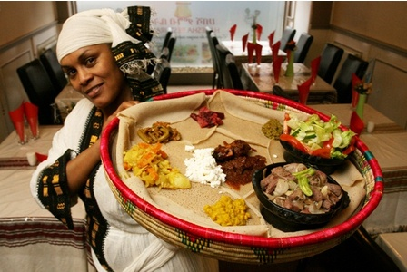
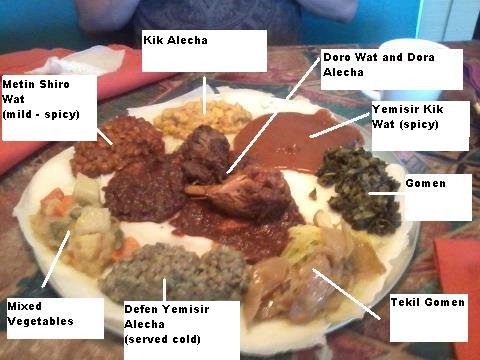

When you consider Ethiopian eating style, the word that comes to mind is "thali", the Indian/South Asian term for a meal composed of samples of various dishes. Ethiopian meat-based mixed plates usually combine several stews like key wat (beef stew), tibs (lamb, beef or goat cubes cooked with nitter kibeh and herbs like rosemary), and kitfo (raw ground beef). We highly recommend ordering one of these and sharing it with at least two to three people...

We serve the best service with delicious Ethiopian dishes...

During special occasion and holiday bread is added and also it is presented as a gift for bridegroom. Teff is unique to the country and is grown on the Ethiopian highlands. There are many varieties of wat, e.g. chicken, beef, lamb, vegetables, lentils, and ground split peas stewed with hot spice called berbere...

Monday - Thursday 8:00am to 1:00am
Friday- Sunday 7:00am to 2:00am
Enjoy Your Meal!